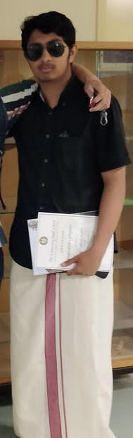
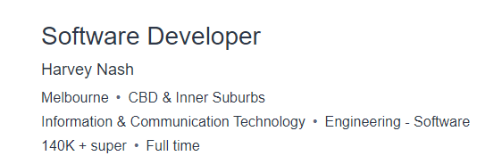
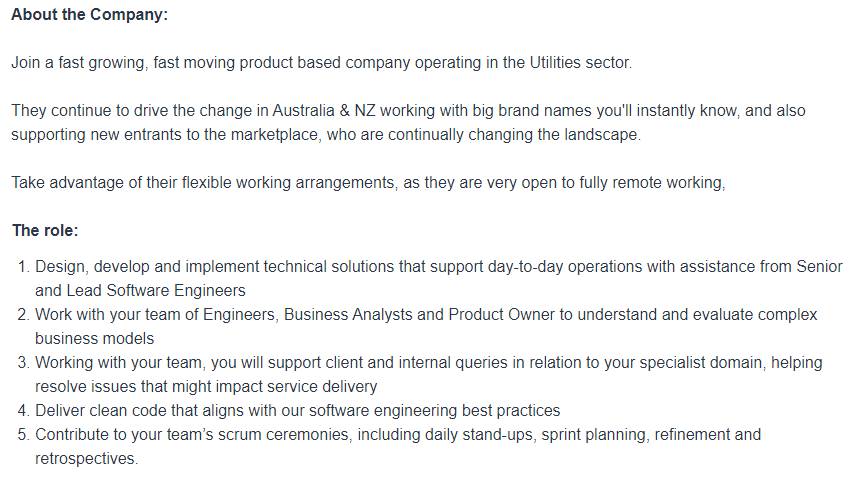
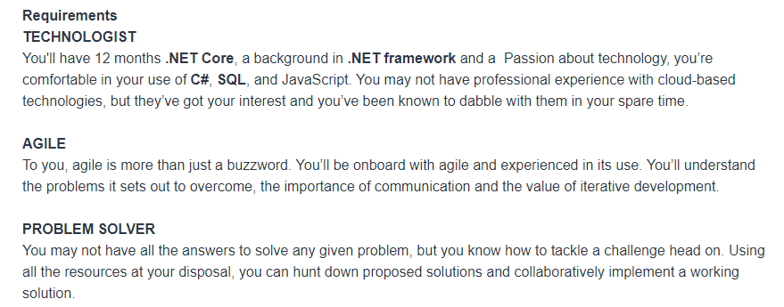
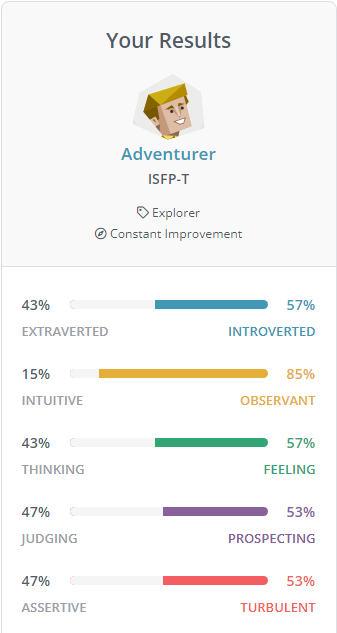
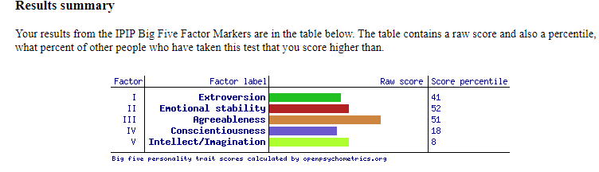

Personal Information
 My name is Aaron Zacharia Mathew, my student number is s3944964 and my student email is s3944964@student.rmit.edu.au. I am 18
years old; my nationality is Australian and my culture is Indian and I am currently a first year student at RMIT doing Bachelor
of Information Technology. In my free time I enjoy playing video games, playing piano, watching tv shows, playing basketball and watching Formula 1.
Interest in IT
What is your interest in IT? When did your interest in IT start?
Was there a particular event or person that sparked your interest? Outline your IT experience.
I am in interested in IT as I believe it to be a great field that will experience growth soon.
My interest in IT began during year 12 as I was figuring out which direction to head in for a career.
After doing some research and speaking to some friends and family I found that IT would be a field
that would have great value in the future.
Why did you choose to come to RMIT?
I chose to come to RMIT as I wanted to complete my studies for IT at a more practical university.
I have always found that I understand what I’m learning better when it’s through practical work
rather than full theoretical work. When I was searching for different IT courses at universities
I asked around and found that universities such as Monash and Melbourne focused on more theoretical
work rather than practical. This led me to wanting to join RMIT.
What do you expect to learn during your studies?
I expect to learn different IT skills such as programming, different programming languages,
problem solving skills and analytical abilities. I would like to learn about managing IT
projects, about data structures user interface and user experience and testing.
I would also like to learn about networking.
Ideal Job
Job Ad


Description of the position, and particularly what makes this position appealing to you.
In this position, I'll be designing, developing, and implementing technical solutions to help with the daily activities of the company.
I’ll be working alongside business analysts and product owners to understand and evaluate problems while also solving those same
problems with the help of other engineers. Apart from this, the role will require me to deliver clean code and clear documentation
that aligns with software engineering best practices. This position appeals to me as it will be a good opportunity to learn and grow
as it uses a range of technology that is widely used in the IT industry. The role also seems to encourage a strong team environment
which would enable me to collaborate and hone my skills.
Description of the skills, qualifications and experience required for this position.
This position requires Minimum 12 months of experience with .NET Core, having a background knowledge and experience with
.NET framework,experience in different programming languages including C#, SQL, and JavaScript. This position also requires some experience with
cloud-based technologies such as AWS and Azure. I will also be required to work in an iterative environment that features sprints that
last a certain amount of time. Work will be planned accordingly and completed before the end of the sprint. This job requires me to tackle
and solve any problem, using all the resources and being able to work with a team and implement a working solution. This position also demands
a passion for technology and the ability to teamwork.
Description of the skills, qualification and experience you currently have.
This position requires problem solving skills and a passion for technology which I believe
I greatly demonstrate by using the full resources at my disposal and assistance from a
team or other individuals. Currently I do not have any experience with C# or SQL. I also
do not have much experience with .NET Core and .NET framework. I also have no experience
with Agile.
Plan.
I plan to develop experience with .NET Core and .NET framework through online resources and
practicing the skills consistently. At the moment, I am learning about python and my next
step would be looking into C# and SQL. I plan to apply for internships where I can work part
of teams and learn Agile, teamwork and problem-solving skills in a real-world environment.
Personal Profile
|  |   |
|---|
What do the results of these tests mean for you?
These results show me that I, tend to be more Introverted than extraverted, use my feelings
to make decisions more than I use thinking for decisions. They show that I am highly observant
meaning that I am practical and focus more on the present rather than worrying about the future.
These results show me that I use my feelings to make decisions more than I use thinking for decisions.
They show that I tend to not just rush headfirst into a problem but stayback to observe and understand
the issue first before creating a strategy. They also determine that I am a friendly person and highly
optimistic.
How do you think these results may influence your behaviour in a team?
These results show that I would be useful in a group as I would prefer to plan out the strategies
needed to tackle the issues we face. I would also be able to communicate well with the team and
maintain healthy relationships with each of the members with a friendly attitude. However, according
to the adventurer personality I might display extreme competitiveness which can be harmful for a team.
The ideas I provide to the team would be more conventional which may not always be the best way to tackle
something.
How should you take this into account when forming a team?
I should be focused on things like making sure all team members ideas are heard and thoroughly
discussed about before the group comes to a decision. To prevent the trait of being extremely
competitive I should keep in mind the main goal of the group which is to complete the assignment
and recognise that everyone functioning together in unity provides the best result. I should also
make sure all group members share their ideas so we can use some abstract ones during the project.
Project Idea
Overview
My project idea is to create a groceries shopping list mobile app that is able to compare the
prices between different stores. The application allows for the user to search for whatever
product they require, and the app then provides them with a list of the product from different
providers and stores while highlighting their prices. It also shows where the product is sold
with the highest discount from and determines the nearest store the user could purchase the
product from.
Motivation
This product allows for users to determine where they are able to purchase their desired project
for the best price. The app also allows for users to determine how far the store is from them
allowing them to plan out their journey if needed. ‘Some supermarket items could rise by 10 to 20
per cent as suppliers struggle with higher charges for packaging and transport due to rising fuel
costs (Foster 2022, para. 1). As a frequent shopper as well, I would enjoy an app like this that
would let me fit all my groceries into my personal budget and ensure I get the best bang for my buck.
Description
The product is an app that can made using React Native, which is a JavaScript framework that is used
for creating mobile applications, and Firebase, which is a database software used for developing mobile
applications. The app can be downloaded on both iOS and android, that allows users to search on the search
bar for specific products and find out their prices and how much discount is placed on the product. The app
is capable of providing the user with the distance of the nearest stores from ascending order (closest to farthest),
making it an easy experience for the user. An example for this could be that a user is looking for chocolate syrup,
they would then type that into the search bar and press enter.
Following this the app would give the results showing different results of chocolate syrup such as different
brands from each store. The results displayed would also show the price for the user to see. To proceed the
user would click on the brand of chocolate syrup from a store they wanted it would proceed to take them to a
new page where they would be able to input their postcode, suburb or even allow access to location, which will
then allow for the app to determine which branches of the specific store the customer chose are the nearest to them
as well as the operating hours of the store. From here the user is able to go to the nearest store which was
displayed and purchase their item. The user is able to navigate out of the pages at any moment with a back button
which the user is able to use at any point if they wish to change the product they want to search or want to exit
the app.
Tools and Technologies
This app requires the use of React Native. This will be used to create the interface of the mobile application. React Native
is similar to React in terms of its code making it easy to learn whilst also having a huge community of people that are willing
to help if need be. Since this is a mobile application, React Native enables the app to be cross-platform which allows it to run
on both IOS and Android. It will also use Firebase, which is used to pair with the user interface, Firebase will be used as the
database of choice. It is free and allows app to store and retrieve all the data that is needed.
Skills Required
The three biggest skills required would be configuring, programming, and debugging. In regard to configuring,
all the necessary libraries packages would have to be installed for both React Native and Firebase to work properly.
To add to this, programs such as VSCode, Android Studio and XCode would be needed so that code can be written and
tested on both IOS and Android virtual devices. Once things are configured, problem solving and critical thinking
skills must be used to write code and make the application and to finalize, the skill of debugging is required to
understand any bugs and how they can be fixed. These are all feasible skills to have as they are mandatory in the
development of software and as a result, must be learnt.
Outcome
If the app is successful, it will allow its users to save money on their purchases which will lead to greater
savings in the long run. The app gives users the ability to check prices at ease without having to search the
products one by one through each store website. Ultimately the product allows users to save both money and time
in the long run.